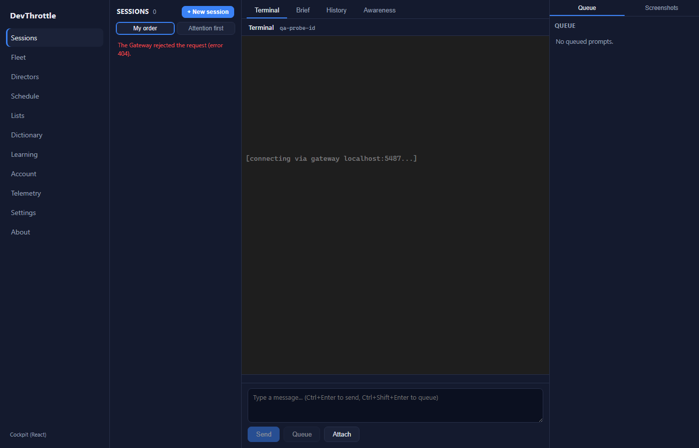
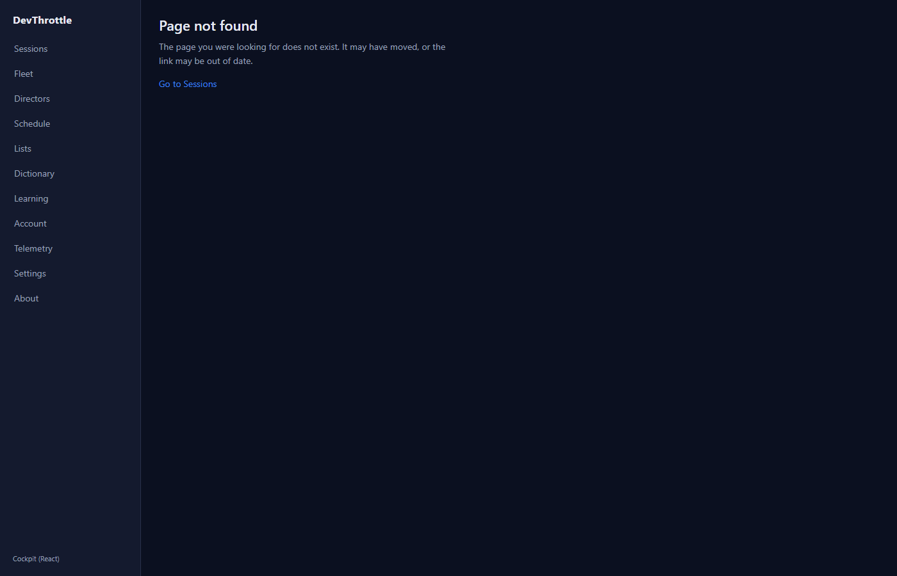
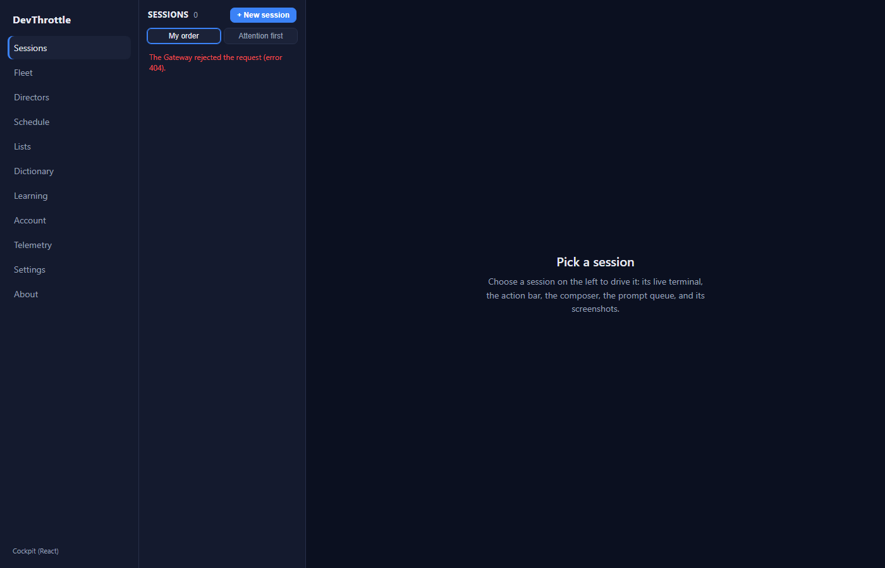

Independent verification by the QA Agent (separate identity from the Developer Agent). Built from
the PR branch issue-1031-cockpit-shell-polish in an isolated worktree; the Developer's
report and screenshots were NOT trusted - every result below was reproduced first-hand.
| # | Criterion | Expected | Actual (measured) | Result |
|---|---|---|---|---|
| 1 | Sessions rail highlight on /session/:id |
Sessions nav item active; no other item active | Live (Playwright) on /session/qa-probe-id: Sessions nav-link-active = true, other active items = none |
PASS |
| 2 | Real NotFound page on unknown path | "Page not found" copy + back link; no placeholder / Blazor / "later issue" text | Live on /this-route-does-not-exist-xyz: not-found text = true, placeholder/Blazor text = false, "Go to Sessions" link present |
PASS |
| 3 | No "- preview" footer | Footer reads the product string only | Live: .rail-foot = "Cockpit (React)" (no "- preview") |
PASS |
| 4 | No ~48px dark band at Sessions viewport bottom | Full-bleed surface fills to viewport bottom (gap 0px) | Live measurement (viewport 900px): .sessions-screen bottom = 900 -> gap = 0px, on both the index and a session detail route. Screenshot shows the styled surface covering the full height. |
PASS |
| 5 | Zero React Router future-flag warnings | 0 future-flag warnings in console on load | Live: console captured on page load; router future-flag / v7_ warnings = 0 | PASS |
| 6 | Missing /assets/*.js returns 404, not the shell |
404 status, response is not the SPA shell | Real GatewayHost integration test Missing_hashed_asset_returns_404_not_the_shell: GET assets/index-does-not-exist.js -> 404, no shell marker. Serving suite 5/5. |
PASS |
| 7 | Dev proxy covers every page's endpoints | Every Cockpit page's Gateway endpoint family is proxied under npm run dev |
Code audit of all Cockpit page/client-core call sites: families used = /sessions, /directors, /interrupted, /fanout, /cron, /wingman, /gateway, /account, /lists, /exes, /ingest, /dictation, /vault, /turnbriefs - all present in vite.config.ts. (Dictionary/Transcripts fetch under /ingest; Account under /account; Telemetry reads /gateway/telemetry-consent.) Remaining schema endpoints are desktop/mobile-internal. |
PASS |
| Step | Result |
|---|---|
npm run lint (eslint .) | 0 errors |
npm run typecheck --workspaces (client-core, cockpit, mobile) | 0 errors |
Cockpit vite build | built (108 modules) |
dotnet build -p:RunCockpitBuild=true (Gateway + cockpit gate) | 0 Warning(s), 0 Error(s) |
dotnet build cc-director.sln | 0 Warning(s), 0 Error(s) |
| CockpitReactAppServingTests | 5/5 passed |
| BrowserPageRoutesTests (route-manifest regression) | 40/40 passed |
Sessions rail highlighted on a session detail route (item 1):

Real Page-not-found page on an unknown path (item 2):

Sessions surface fills the full viewport height - no bottom band (item 4):

Change is cosmetic/routing plus a defensive static-file 404. No blocking security rule touched; no CenCon architecture/security doc change required. No new test failures introduced (serving 5/5, routes 40/40, full solution 0/0).
Verdict: PASS - flow:done. All seven acceptance criteria verified independently with proof.